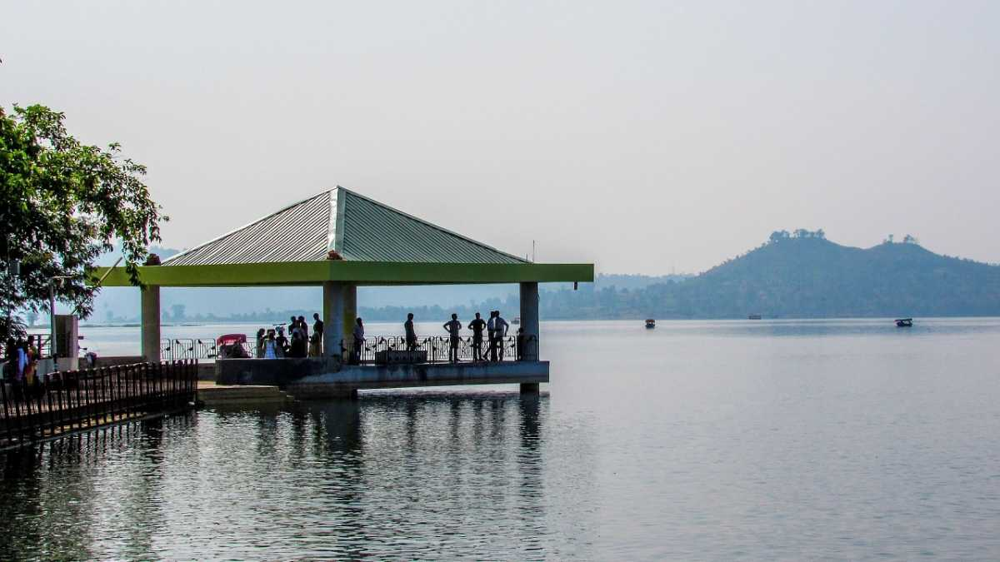

India Tourism
1. silvassa
 Silvassa Tourism
With the hills of the Western Ghats and surrounding lush greenery, it is an ideal indulgence into the wild side for a tourist and its Portuguese heritage makes it famous amongst the history enthusiasts as well.
Located in the southern region of Gujarat and close to Vapi, Silvassa is the capital of the union territory Dadra and Nagar Haveli and is famous for its greenery, exotic resorts, industries and tax - free alcohol. Silvassa is a treat for adventure enthusiasts with several water parks based activities available to its visitors. It is also a paradise for those looking for handmade products. Kilvani Road is the main market in Silvassa where handmade products like Warli paintings and paper bags are sold. People who love to experiment with food have a wide range of options available to them at the restaurants in Silvassa, mainly focusing on the local Gujarati cuisine along with international cuisines including Italian, Chinese etc.
Silvassa Tourism
With the hills of the Western Ghats and surrounding lush greenery, it is an ideal indulgence into the wild side for a tourist and its Portuguese heritage makes it famous amongst the history enthusiasts as well.
Located in the southern region of Gujarat and close to Vapi, Silvassa is the capital of the union territory Dadra and Nagar Haveli and is famous for its greenery, exotic resorts, industries and tax - free alcohol. Silvassa is a treat for adventure enthusiasts with several water parks based activities available to its visitors. It is also a paradise for those looking for handmade products. Kilvani Road is the main market in Silvassa where handmade products like Warli paintings and paper bags are sold. People who love to experiment with food have a wide range of options available to them at the restaurants in Silvassa, mainly focusing on the local Gujarati cuisine along with international cuisines including Italian, Chinese etc.
2.Dudhni

40 kms away from Silvassa, the capital of the union territory of Dadar and Nagar Haveli, Dudhni has emerged as a popular tourist attraction in the recent years. The construction of Madhuban dam on the Daman Ganga has resulted in the formation of a water front in Dudhni, taking advantage of which, the tourism department of Dadar and Nagar Haveli has invested in making Dudhni a popular destination for water sports.
How to reach: The most convenient way to reach here is by car. Lansdowne is 270 km away from Delhi and takes an overnight journey to reach here. There are no direct buses to Lansdowne.
3.Khanvel
 Khanvel
20 kms to the south of Silvassa, Khanvel is a popular tourist destination among nature lovers. It makes for a perfect getaway for those who want to holiday the lazy way, not doing much, just being there, getting lost in the quietness of the valley and in the process relaxing and refreshing themselves with the proximity to nature.
click here for more
Khanvel
20 kms to the south of Silvassa, Khanvel is a popular tourist destination among nature lovers. It makes for a perfect getaway for those who want to holiday the lazy way, not doing much, just being there, getting lost in the quietness of the valley and in the process relaxing and refreshing themselves with the proximity to nature.
click here for more